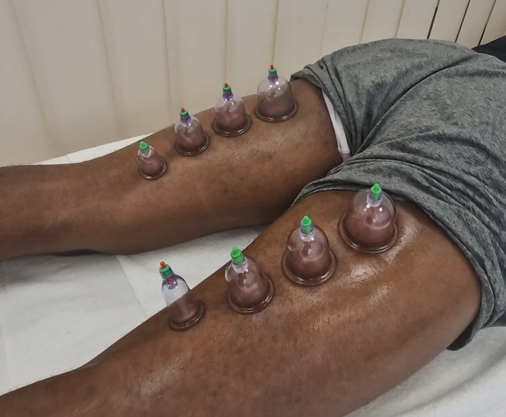
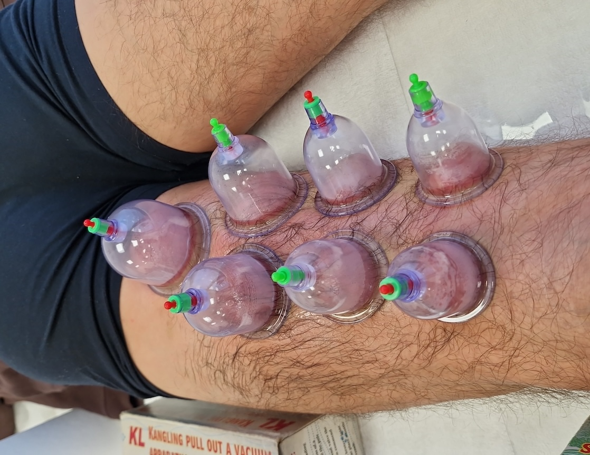
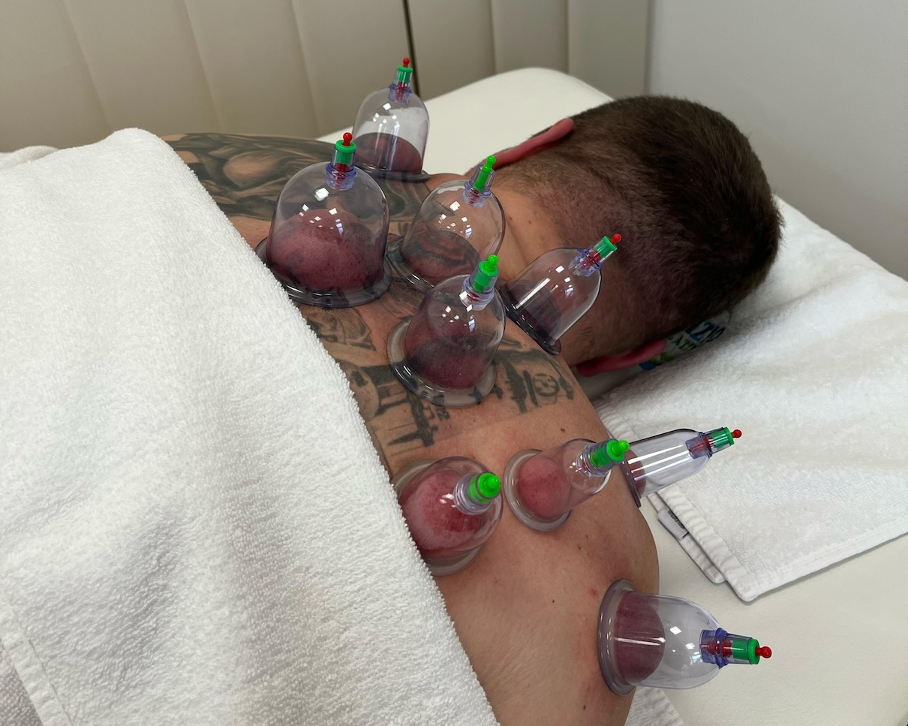
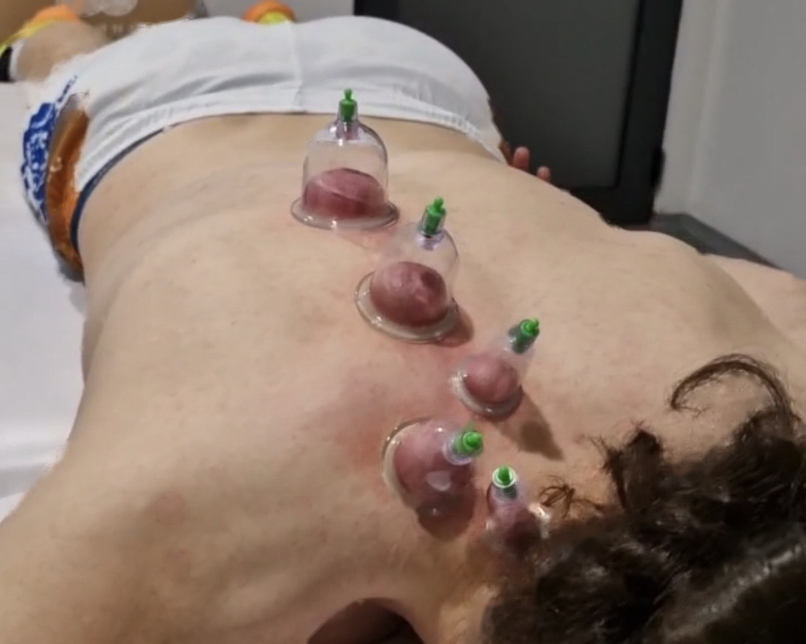

Cupping — kada „obična" masaža ne stigne dovoljno duboko
Verovatno ste videli sportiste sa onim ljubičastim krugovima po leđima posle utakmice — to je cupping. Za razliku od masaže koja pritiska mišić nadole, vakuumske čašice rade suprotno: blagim podpritiskom podižu kožu i tkivo ispod nje, opuštaju zalepljene fascije (vezivno tkivo oko mišića) i puštaju krv u predele koje masaža teško dohvati. Idealno za tvrdokorne čvorove u leđima i ramenima, „uštinut" vrat i napetost koja se vraća iz nedelje u nedelju.

Kako izgleda tretman
Postavljanje čašica
Ležite na stomak (ili kako vam odgovara). Na napetim tačkama postavljamo čašice — silikonske se utisnu rukom, staklene radi specijalna pumpica. Bez vatre, bez bola.
Vakuum koji „vuče"
Osetićete neobično, ali prijatno povlačenje kože nagore. Većini ljudi to vrlo brzo postane opuštajuće — kao da neko „raspakuje" mišić iznutra.
Statički ili klizni rad
Čašice ostavljamo na mestu 5–15 minuta ili ih, uz malo ulja, sporo klizimo preko mišića (sliding cupping). Pritisak možete u svakom trenutku spustiti.
Najbolje indikacije za cupping
Cupping najbolje radi tamo gde su tegobe duboke, tvrdokorne i gde klasična masaža pomogne — ali samo na kratko.
Mišićna napetost i bol
- Hronična napetost u gornjim leđima i trapezima — „ramena kao kamen", „uštinut vrat"
- Ukočenost i bol u krstima (lumbalgija) koji se vraćaju
- Trigger tačke (čvorovi u mišiću) koje masaža nije razvezala
- Tenzione glavobolje koje polaze iz vrata
- „Zaleđeno rame" (frozen shoulder) — u odabranim fazama oporavka
- Teniski i golferski lakat — kao dopunska terapija
- Išijas sa bolnim tačkama u gluteusu
Oporavak, fascija i drugo
- Sportski oporavak — DOMS, ukočenost posle napornog treninga
- Zategnutost iliotibijalne trake (IT band) i spoljnog dela kolena
- Plantarni fasciitis — bol u peti i tabanu
- Restrikcije fascije nakon starijih povreda
- Omekšavanje starih ožiljaka (nakon skidanja konaca i kasnije)
- Celulit kao dopuna programu (sliding cupping)
- Prehlada i zapušenost — tradicionalna primena na gornjim leđima, blago i na zahtev


Koliko traje i kako se planira
Polazni okvir — broj i intenzitet tretmana prilagođavamo vašim tegobama i osetu tokom prve sesije.
- Trajanje sesije
- 15–30 minuta
- Stil rada
- statički (5–15 min) ili klizni (sliding)
- Vakuum
- podesiv — blag do umeren, nikada bolan
- Frekvencija
- 1–2 puta nedeljno
- Tipičan paket
- 4–8 tretmana
- Kombinacije
- odlično ide uz masažu, TECAR i istezanje

Šta da očekujete
Pre prve sesije postavljamo nekoliko kratkih pitanja o vašem zdravlju i tegobama. Skidate odeću do osećaja udobnosti i ležete na sto — najčešće na stomak. Ako radimo klizni cupping, koristimo toplo ulje. Kad se čašice postave, osetićete povlačenje kože — u prvih par sekundi neobično, a većini ljudi vrlo brzo prijatno i opuštajuće. Posle tretmana, na tim mestima mogu ostati okrugli tragovi — to NISU modrice nego normalan znak tehnike i blede za 3–7 dana. Popijte dosta vode, izbegavajte vrelo tuširanje i naporan trening neposredno posle sesije.
Kada cupping nije za vas
Molimo vas da nam pre prve sesije kažete ako: imate poremećaj zgrušavanja krvi ili pijete antikoagulanse (varfarin i slični lekovi — obavezno se konsultujemo), ste trudni (donja leđa i stomak — prilagođavamo ili izbegavamo), imate aktivno stanje kože na tom mestu (egzem, psorijaza u izlivu, opekotina od sunca, otvorena rana), ste skoro imali operaciju, imate izrazito proširene vene na tom mestu, aktivan tumor u oblasti (samo uz dozvolu onkologa), ili veoma osetljivu i krhku kožu (stariji pacijenti, dugotrajna terapija kortikosteroidima). Pre prvog tretmana uvek pitamo — bezbednost je na prvom mestu.